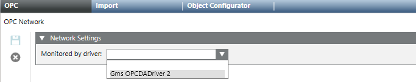

OPC Driver and Network
Before you can configure an OPC network, you must add an OPC driver and then start the OPC driver (or the simulator). For instructions see Configuring Third-party OPC Client Connectivity.
Typically, after adding the OPC driver you will start the simulator to configure the OPC network (import OPC servers, and so on). Then, when the configuration is finished, you will stop the simulator and start the real driver.

An OPC driver can monitor only one OPC network. This means that before you can import OPC servers, you must configure all the required OPC networks, each one monitored by an OPC driver.
In the System Browser tree, you can add one or more OPC drivers under the Desigo CC server and/or under a FEP station. In this way, it is possible to better configure the OPC networks. For example, by allocating several OPC servers (to which to connect) to different OPC networks, where each OPC network is associated with a different OPC driver.

- When you select the driver object in the System Browser tree, the Extended Operation tab displays its Manager Status:
Stopped:The driver is not running. You can click Start to start the driver with a full connection to the field, or Start Conf... to start the driver without a field connection, for configuration purposes.Configuration Mode:The driver was started with Start Conf… and is running properly, but without a field connection. This mode lets you continue configuring the network (for example, importing devices, and so on). When you are ready to establish a connection to the field devices, you must Stop the driver and then start it again with Start.Started:The driver was started with Start and is running properly, with a full connection to the field. You can click Stop to stop it.Failed:The driver was started with Start or Start Conf… but there is no connection to the Desigo CC server or FEP station (for example, a station cannot be reached or is disconnected). You can stop the driver and then try to start it again.- When the Manager Status is
Failed, you cannot make changes to the configuration (for example, import operations are not allowed). - It is not possible to Stop the driver during import operations.

Validation for OPC driver and network
If an OPC driver is subject to validation, you have to provide the password to delete it.
If an OPC network is subject to validation, you have to provide the password to modify its configuration or delete it.